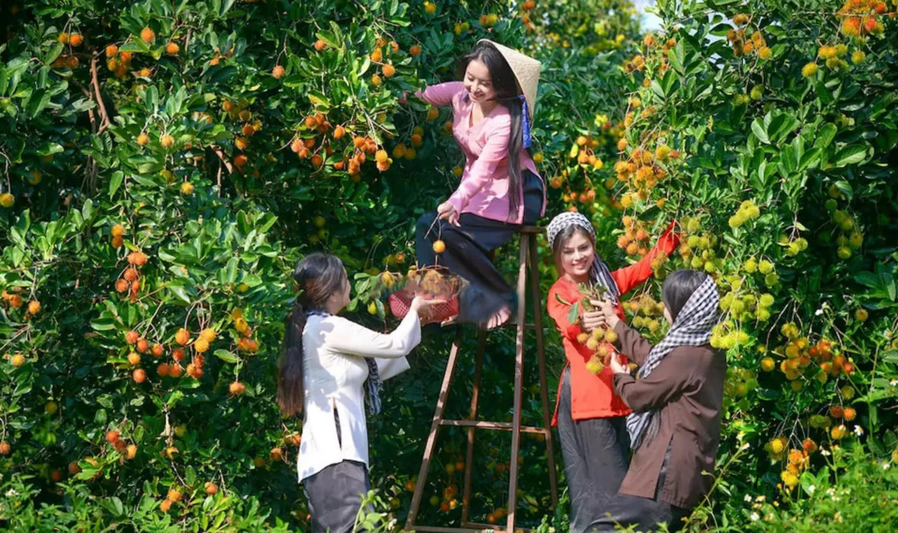
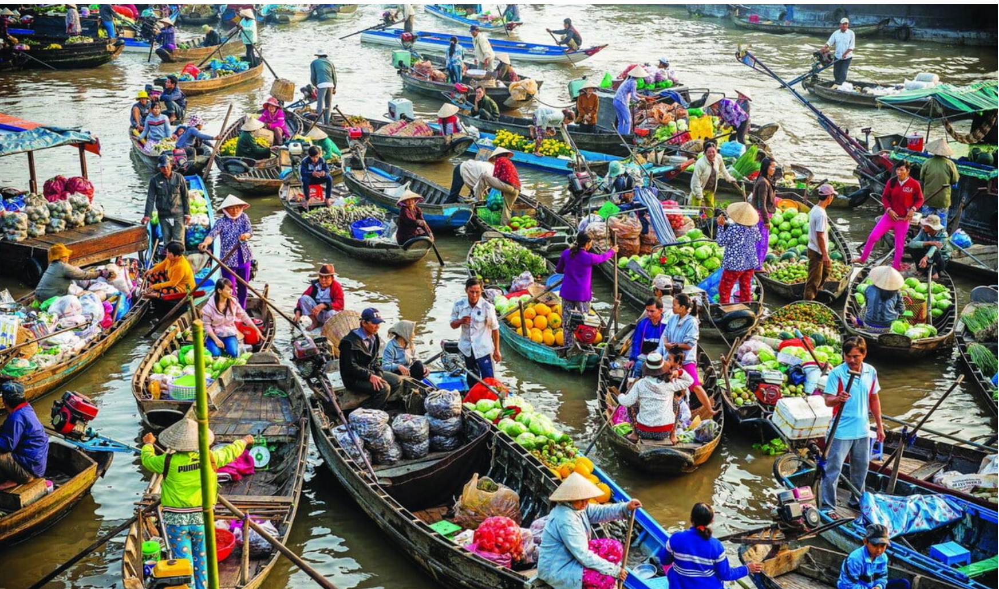
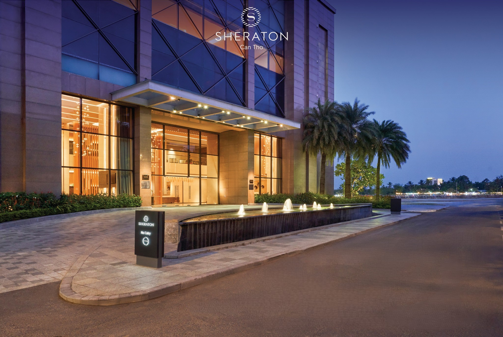
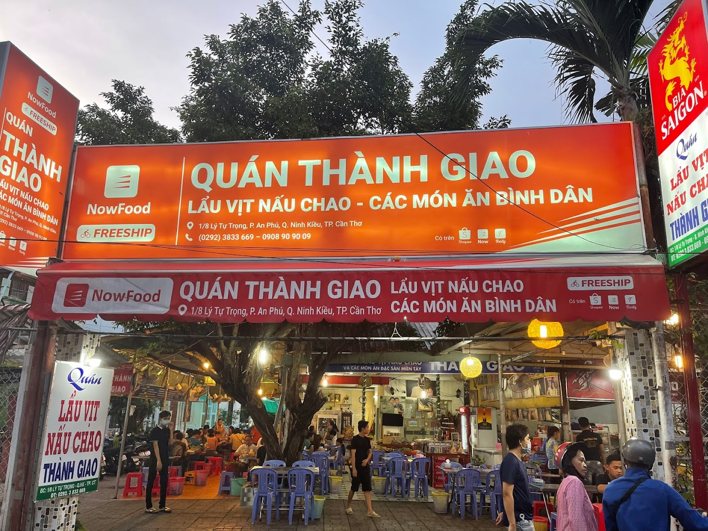
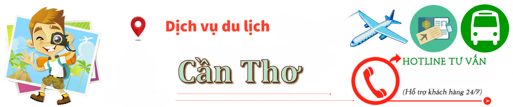

Du Lịch Cần Thơ
Hướng dẫn & Tư vấn cho cộng đồng người Việt tại Fairfax

Thời Điểm
☀️ Tháng 12 – Tháng 4 Mùa khô, ít mưa – lý tưởng để tham quan chợ nổi, miệt vườn
🌧 Tháng 5 – Tháng 11 Mùa mưa, cây trái phong phú nhưng cần tránh ngày mưa lớn
👉 Thời gian đẹp nhất: Tết Nguyên đán, tháng 3–4 hoặc tháng 8–9 mùa trái cây

🌟 Điểm đến nổi bật ở Cần Thơ
🛶 Chợ nổi Cái Răng Đặc sản văn hoá sông nước – đi sớm từ 5–7h sáng
🌴 Làng du lịch Mỹ Khánh Tham quan vườn trái cây, nhà cổ, câu cá, đi xe ngựa
🏠 Nhà cổ Bình Thủy Nhà cổ hơn 100 năm, kiến trúc Pháp – nổi tiếng trong phim
🌿 Thiền viện Trúc Lâm Phương Nam Thiền viện lớn nhất miền Tây
🚲 Cầu đi bộ Ninh Kiều, Bến Ninh Kiều Ngắm sông Hậu về đêm, chụp ảnh lung linh
⛵ Cù lao Tân Lộc – Thốt Nốt Miệt vườn, rượu mận, sông nước thanh bình

🛏️ Khách sạn & homestay
⭐ 5 sao Vinpearl Hotel Cần Thơ (view sông Hậu), Sheraton Cần Thơ
⭐ 3–4 sao giá hợp lý TTC Hotel Premium, Holiday One
🏡 Homestay miền Tây Mekong Rustic Cần Thơ, Green Village Mekong
🚢 Du thuyền Cần Thơ Mekong Eyes Cruise (tour 2N1Đ trên sông Tiền – sông Hậu)

🍜 Ẩm thực Cần Thơ
🍲 Bún cá, bún mắm, bún nước lèo Quán Lý Hương, Bún mắm 12c
🥬 Lẩu mắm Cần Thơ Quán Sáu Hoài, Nhà hàng Hoa Sứ
🍖 Vịt nấu chao Quán Thành Giao (trên đường Lý Tự Trọng)
🌾 Bánh xèo miền Tây Quán Bánh Xèo 7 Tới, Bánh Xèo Cái Sơn
🍹 Trái cây miệt vườn, rượu mận Có tại Mỹ Khánh, Tân Lộ

Dịch vụ hỗ trợ
Là nơi bạn có thể liên hệ để được hỗ trợ, tư vấn, phản ánh hoặc giải quyết các vấn đề liên quan đến hoạt động du lịch khi đến Cần Thơ.
☎️ Trung tâm hỗ trợ khách du lịch Cần Thơ 0292 3817 710
🚓 Công an TP. Cần Thơ (PCCC, hỗ trợ khẩn cấp) 113 – 114 – 115
🚑 Bệnh viện Đa khoa Trung ương Cần Thơ 0292 3739 292
🚌 Bến xe – hỗ trợ di chuyển Bến xe Cần Thơ: 0292 3769 026
💡 lưu ý:
⏰ Đi chợ nổi phải dậy sớm (khoảng 5–6 giờ sáng) – nên thuê thuyền riêng để thoải mái.
☔ Mang theo nón, áo mưa nhẹ, kem chống muỗi nếu đi miệt vườn.
🛶 Nên đặt tour 1 ngày trọn gói gồm chợ nổi + vườn trái cây + nhà cổ.
📸 Hãy giữ vệ sinh và cư xử lịch sự khi chụp hình hoặc tham quan nhà dân.